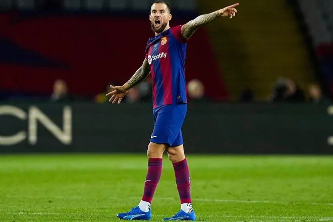

bienvenida
Hola, Bienvenidos a MataCenteno tu sitio web del fútbol
mundial.
Espero que tu visita a ésta plataforma sea de lo más
placentera y
quiero que sepas que siempre seras bienvenido

Noticias
Luiz Henrique entre las mejores ventas en la historia del Betis
Xavi ha dado la lista de convocados para jugar frente al Alaves

rudiger quiere jugar el clasico del domingo

Bergvall escoge al Tottenham por encima del Barcelona

Preolimpico 2024
Tabla de posiciones
Grupo A
- Brasil: Clasificados
- Venezuela: Clasificados
- Ecuador: Eliminados
- Bolivia: Eliminados
- Colombia: Eliminados
Grupo B
- Argentina: Clasificados
- Paraguay: Clasificados
- Uruguay: Eliminados
- Peru: Eliminados
- Chile: Eliminados
Resultados de los partidos del jueves 01/02 y viernes 02/02:
- Brasil 1 Venezuela 3
- Bolivia 1 Colombia 0
- Uruguay 3 Argentina 3
- Paraguay 1 Chile 2
Cuadrangular Final: Proximos partidos:
Fecha1: Lunes 05/02:
- Venezuela vs Argentina
- Brasil vs Paraguay
Fecha 2: jueves 08/02
- Argentina vs Paraguay
- Venezuela vs Brasil
Fecha 3: domingo 11/02
- Argentina vs Brasil
- Venezuela vs Paraguay
Recuerda que solo 2 de estos cuatro equipos van a las Olimpiadas
VAMOS VINOTINTO SI SE PUEDE

Partidos para el fin de semana
Partidos del sabado 03/02/2024
Hora 8:30 am hora venezolana: Everton vs Tottenham
Hora 10:30 am hora
venezolana: Bayern Munich vs Monchengladbach
Hora 11:00 am hora venezolana: Newcastle vs Luton Town
Hora 13:00 pm hora venezolana: Frosinone vs Milan
Hora 13:30 pm hora venezolana: Alaves vs FC Barcelona
Hora 15:00 pm hora venezolana: Rayo Zuliano vs Portuguesa
Hora 15:45 pm hora venezolana: Monagas vs Metropolitanos
Hora 20:30 pm hora venezolana: Inter vs Zamora
Partidos del domingo 04/02/2024
Hora 10:00 am hora venezolana: Chelsea vs Wolverhampton
Hora 10:00 am hora venezolana: Manchester united vs West Ham United
Hora 12:30 pm hora venezolana: Arsenal vs Liverpool
Hora 15:45 pm hora venezolana: Inter de Milan vs Juventus
Hora 16:00 pm hora venezolana: Deportivo Tachira vs Estudiantes de Merida
Hora 16:00 pm hora venezolana: Real Madrid vs Atletico de Madrid
Hora 18:15 pm hora venezolana: River Plate vs Velez Sarsfield
Futbolistas del ayer
Marco Van Basten, nacido en Utrecht,Paises Bajos en 1964, uno de los mejores futbolistas de la
historia. Fue escogido como el segundo mejor futbolista holandes, solo despues de Cruyf.
Jugo como delantero centro, como unico punta y a veces acompañado de otro delantero. Jugo en el
Ajax de Amsterdam, donde gano varios trofeos locales, entre los que estan la Eredivisies, y ademas
una Recopa de Europa.
Tambien jugo en el Milan de la serie A de Italia, donde jugo junto a sus compañeros de seleccion
como Ruud Gullit y Frank Rickard. En esta escuadra, gano dos copas de Europa, dos Super Copa de
Europa y dos Copas Intercontinentales
Una grave lesion hizo que se retirara de las canchas en 1995. Luego fue entrenador de la seleccion
de Paises Bajos en el Mundial del 2006 y Eurocopa del 2008. Mas tarde fue DT del Ajax, del AZ Alkmar,
del Heerenven y otros equipos de la liga de Paises Bajos
Yo no lo vi jugar, no vivi esa epoca del futbol cuando el jugaba, pero he visto uno que otro partido
del Milan de los noventa y era un buen jugador, de esos que se echan el equipo al hombro, que todo
el partido estan apagados, pero con una sola jugada, te cambiaba el partido